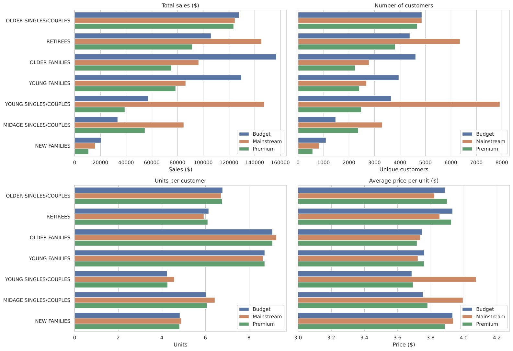
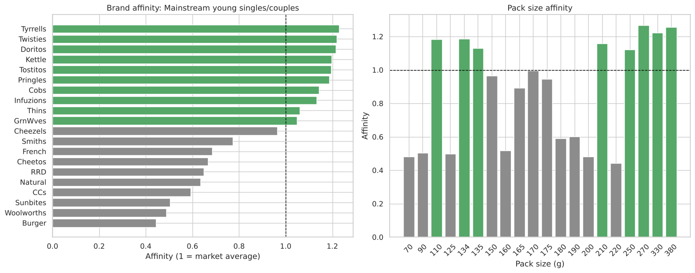

A supermarket's Category Manager for Chips wants to know who buys chips and how they buy, to plan the category for the next six months.
The problem
The data has 12 months of transactions and customer segments from loyalty cards. The question is which customers drive chip sales, why, and what the store should do about it. This is a case study from the Quantium virtual experience programme on Forage. The analysis and code are my own.
Approach
- Cleaning. Converted Excel dates, removed salsa products (dips, not chips), removed one commercial buyer who ordered 200 packets at a time, and checked the calendar for missing days. The only missing day is Christmas, when stores are closed.
- Feature engineering. Extracted pack size and brand from the product names and standardised brand spellings.
- Segmentation. Split sales by life stage and price segment into number of customers, units per customer and price per unit.
- Hypothesis test. Welch's t-test on price per unit.
- Affinity analysis. Which brands and pack sizes the main segment buys more than the rest of the market.
Results
3segments drive the most sales
$4.04 vs $3.71price per packet, p < 0.001
~20%more premium brands bought by the key segment


- Three segments account for the most sales: Budget older families (8.7%), Mainstream young singles and couples (8.2%) and Mainstream retirees (8.0%).
- Young singles, couples and retirees sell a lot because there are many of them. Families sell a lot because each customer buys more units.
- Mainstream young and midage singles and couples pay more per packet than Budget and Premium customers of the same age ($4.04 vs $3.71, p < 0.001).
- This segment buys about 20% more Tyrrells, Twisties, Doritos and Kettle than other customers, prefers large packs (270 to 380 g), and buys fewer value and private label brands.


Recommendations
- Place the segment's preferred brands where impulse purchases happen, such as near checkouts.
- Test promotions on large packs of those brands.
- Keep multi-buy offers for families.
- Measure any layout change with a trial store against control stores before rolling it out.